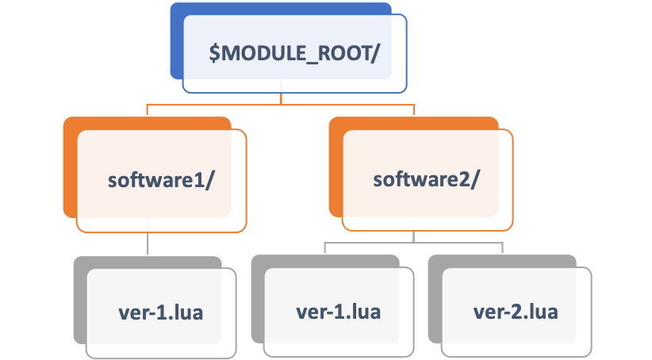
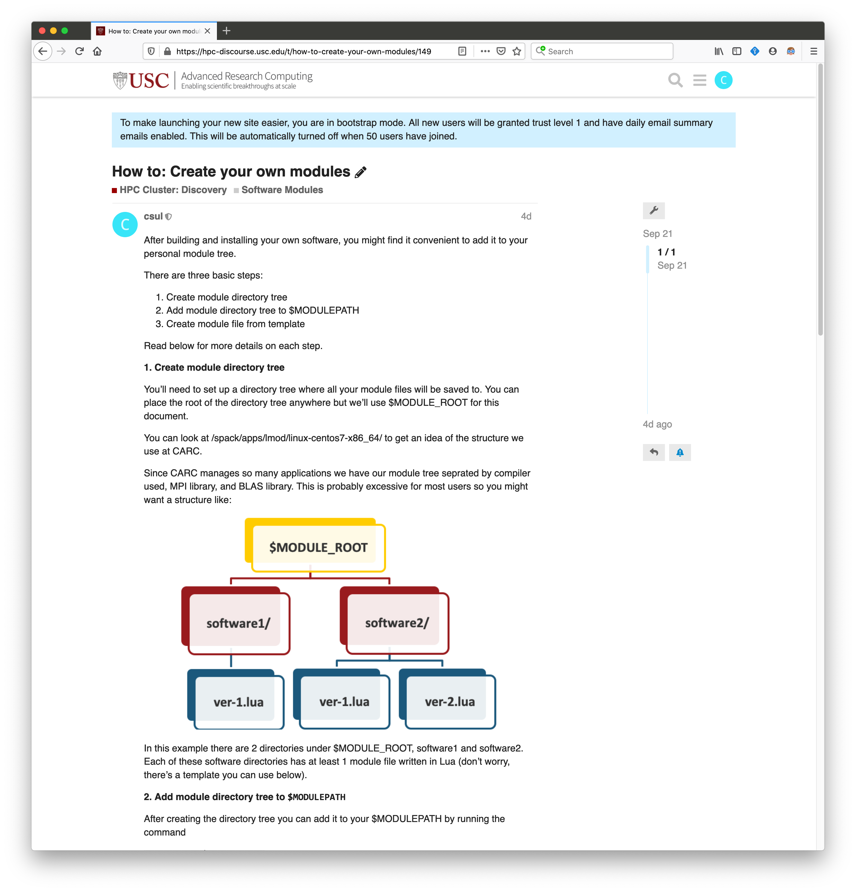
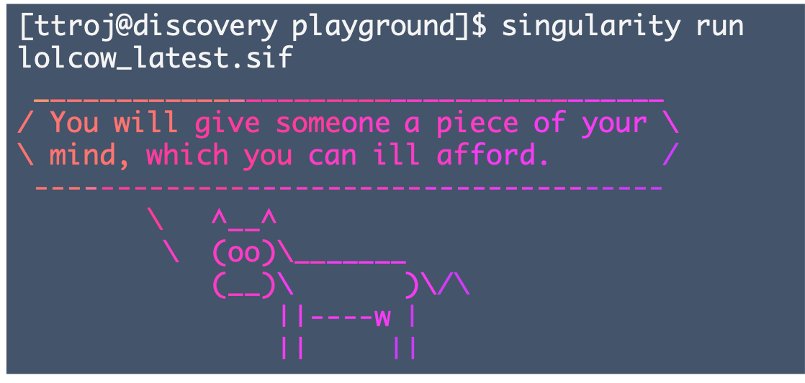
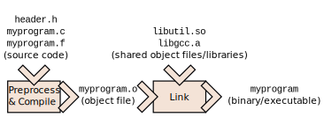
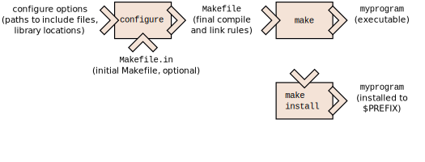
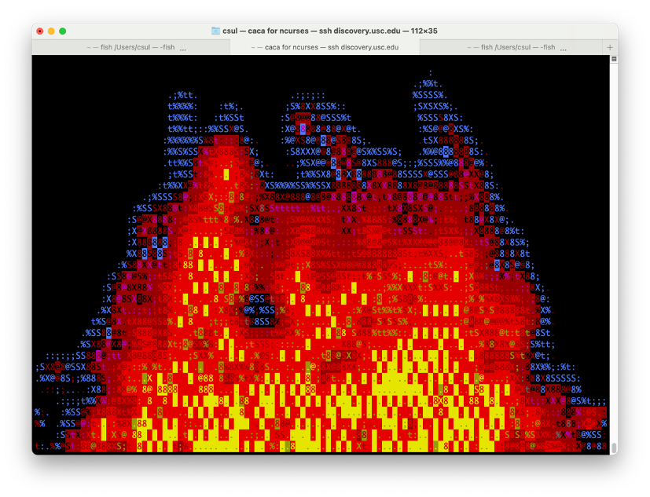

class: left, top, title-slide background-image: url('images/cluster_pic.jpg') <h1> Software Mangement on CARC</h1> <h3> Center for Advanced Research Computing <br> University of Southern California <br> <h3> <div class="footnote"> <p> Last updated 2022-01-27</p> </div> --- ## Outline - CARC managed software - Finding software - Using modules - Neat features - Installing software - Precompiled binary - Python - R - Singularity - Compiling from source - Finding dependencies --- ## Software is complex! <img src="images/spack_dependency_chain.png"/> Source: https://computing.llnl.gov/projects/spack-hpc-package-manager --- ## CARC Managed Software - Software is build using [Spack](https://spack.readthedocs.io/en/latest/) and saved to /spack/apps/linux-centos-x86_64 - Instead of manually managing environemnt, use [Lmod](https://lmod.readthedocs.io/en/latest/010_user.html) software modules --- ## What are Software Modules? - Modules present installed software to users - Set environment variables - `PATH` - `PKG_CONFIG_PATH` - `LD_LIBRARY_PATH` - `<SOFTWARE>_ROOT` - Show how package was built - Show where package was installed to - Prevent loading imcompatible software --- ## How to Use Modules - By default you have the recommended `usc` module loaded ```bash $ module list Currently Loaded Modules: 1) gcc/8.3.0 3) openmpi/4.0.2 5) usc 2) openblas/0.3.8 4) pmix/3.1.3 ``` - You can check what's available with `module avail` - Depending on active modules, you will see diferent results from `module avail` --- ## How to Use Modules - There are 4 kinds of modules | Type | Examples | Details| |---|---|---| |Compiler| `gcc`, `icpc`| Unlocks softare tree built with that compiler| |Math library| OpenBLAS, AMD-blis, netlib| Library for linear algebra operations| |MPI library| OpenMPI, mvapich, IntelMPI| Library for apps that communicate across compute nodes| |Applications| bamtools, cmake, libpng| Most common modules| --- ## Example module avail listing ```bash ---- /spack/apps/lmod/linux-centos7-x86_64/openmpi/4.0.2-ipm3dnv/openblas/0.3.8-2no6mfz/gcc/8.3.0 ----- cantera/2.4.0-openblas mumps/5.2.0-openblas siesta/4.0.1-openblas hypre/2.18.2-openblas netlib-scalapack/2.1.0-openblas siesta/4.1.5 (D) ---------------- /spack/apps/lmod/linux-centos7-x86_64/openmpi/4.0.2-ipm3dnv/gcc/8.3.0 ---------------- bigdft/1.9.1 lammps/29Oct20 relion/3.1.1-cuda-10.1 boost/1.73.0-openmpi (D) matio/1.5.13 relion/3.1.1-cuda-11.1-k40 charmpp/6.10.2-cuda mpiGraph/10.27.2020 relion/3.1.1-cuda-11.1 (D) charmpp/6.10.2-ucx (D) namd/2.14 scotch/6.0.8 fftw/3.3.8-dp netcdf-c/4.7.3 sundials/3.1.2 fftw/3.3.8-sp (D) netcdf-fortran/4.5.2 sundials/5.1.0 (D) gromacs/2020.3 osu-micro-benchmarks/5.7 tau/2.29 (D) hdf5/1.10.6 parmetis/4.0.3 valgrind/3.15.0-openmpi hmmer/3.3 quantum-espresso/6.5-openblas-hdf5 hpctoolkit/2019.12.28 relion/3.1_beta --------------- /spack/apps/lmod/linux-centos7-x86_64/openblas/0.3.8-2no6mfz/gcc/8.3.0 ---------------- jags/4.3.0 r/3.5.3 r/4.0.0 (D) r/4.1.0 suite-sparse/5.3.0-openblas plink2/2.00a2.3-openblas r/3.6.3 r/4.0.3 rsem/1.3.1 --------------------------- /spack/apps/lmod/linux-centos7-x86_64/gcc/8.3.0 --------------------------- adapterremoval/2.3.1 lzma/4.32.7 argtable/2-13 lzo/2.10 aspera-cli/3.7.7 m4/1.4.18 at-spi2-atk/2.26.2 makedepend/1.0.5 at-spi2-core/2.28.0 maven/3.5.0 ``` --- ## Finding Modules - Use `module spider` to search for software that's not available - Might be hidden due to prerequisites ```bash $ module spider r/3.5.3 ----------------------------------------------------------------------------- r: r/3.5.3 ----------------------------------------------------------------------------- You will need to load all module(s) on any one of the lines below before the "r/3.5.3" module is available to load. gcc/8.3.0 openblas/0.3.8 Help: R is 'GNU S', a freely available language and environment for statistical computing and graphics which provides a wide variety of statistical and graphical techniques: linear and nonlinear modelling, statistical tests, time series analysis, classification, clustering, etc. Please consult the R project homepage for further information. ``` --- ## Software Stack Compatibility - Switch compilers, Lmod will switch loaded modules - Prevents using incompatible software ```bash $ module list Currently Loaded Modules: 1) openblas/0.3.8 4) usc 7) gcc/8.3.0 10) ncurses/6.1 2) openmpi/4.0.2 5) zlib/1.2.11 8) cuda/10.0.130 11) cmake/3.18.1 3) pmix/3.1.3 6) libxml2/2.9.9 9) llvm/12.0.0-dev $ module swap gcc intel/19.0.4 Inactive Modules: 1) cuda/10.0.130 2) openblas/0.3.8 3) openmpi/4.0.2 Due to MODULEPATH changes, the following have been reloaded: 1) libxml2/2.9.9 2) ncurses/6.1 The following have been reloaded with a version change: 1) zlib/1.2.11 => zlib/18.0.4 ``` --- ## How to Use Modules - Use `module avail` to see what's available - Use `module load` to load the module ```bash $ which python /usr/bin/python $ module load python $ which python /spack/apps/linux-centos7-x86_64/gcc-8.3.0/python-3.7.6-dd2am3dyvlpovhd4rizwfzc45wnsajxf/bin/python ``` - Some modules 'unlock' more modules --- ## Saving Sets of Modules - If you find yourself loading a set of modules frequently: ||| |---|---| |`module save`| Save current modules to default collection| |`module save <name>`| Save current modules as <name> collection| |`module restore`| Load modules in default collection| |`module restore <name>`| Load modules in <name> collection| |`module describe <name>`| Show which modules are in <name> collection| |`module savelist`| Show names of all collections| --- ## Creating your own modules  - Module files can point to user-installed software - They require a specific file structure - Need to add root dir to `$MODULEPATH` --- ## Creating Your Own Modules <a href="https://hpc-discourse.usc.edu/t/how-to-create-your-own-modules/149" >  </a> - Check our Discourse [page](https://hpc-discourse.usc.edu/t/how-to-create-your-own-modules/149) for details - Save your module files in specific directory tree - Template .lua file in discourse page --- class: title-slide <div style="display: table; height: 600px; overflow: hidden;text-align: center;width:100%"> <div style="display: table-cell; vertical-align: middle;text-align: center;" class="dlgImg"><h1> Installing your own software</h1></div> </div> --- ## Installing Software - Installing software can be quick and painless - With precompiled binaries for your specific operating system, it can be as easy as unzipping a file - ... or neither quick nor painless - If you have to compile the software yourself using compilers, Makefiles, external libraries, etc. - (or even worse...) - If it's from an academic lab from 1999 and requires old versions of multiple libraries which have multiple dependencies! --- ## Installing software - Generally speaking, software can be installed globally or locally - On your laptop, you are the system administrator - On HPC, you are not the system administrator - Globally means system-wide - Software is installed to system locations like `/usr/bin` or `/usr/local` - On HPC, you are not the system administrator --- ## Installing Software - System-wide installations will not work on Discovery/Endeavour - Only CARC staff have root privileges - `yum install` and `apt install` will not work - CARC users must peform local or "user" installs - Software will be accessible by you, even on compute nodes - It is not always obvious how to perform a user install - Depends on software - You may have to check documentation --- ## Precompiled binary - Simplest case - Just download and extract - Not always available ```bash $ cd /project/ttroj_412/software #Copy tarball $ wget https://example.com/sample.tar.gz #Extract files $ tar xvf sample.tar.gz #Set your environment (adds a new location to your path) $ export PATH=/project/ttroj_412/software/sample/bin:${PATH} #Test installation $ binary_name ``` --- ## Installing Python Packages ```bash # Don't forget to load the version of Python you want to use $ module load python/3.7.6 # To check what packages are available use the command $ pip freeze # Install package (from bash shell) $ pip install <package_name> --user # To upgrade pip install <package_name> --upgrade --user ``` --- ## Dependencies fo Python Packages - Some packages are wrappers for C/C++ libraries - The installer will need to know where they are saved - The [h5py](http://docs.h5py.org/en/latest/build.html) packages is one example ```bash $ HDF5_DIR=/path/to/hdf5 $ HDF5_VERSION=X.Y.Z $ export CC="mpicc" $ pip install h5py --user ``` - You might have to download the package tarball and edit some files like `setup.py` --- ## Installing R Packages - Load module for R ```bash $ module load r $ R # Install package > install.packages('<package_name>') # If you have to specify a path > install.packages('<package_name>', lib="/path/to/packages") # Load library you want to use > library('<package_name>') # If you have to specify a path > library('<package_name>', lib.loc="/path/to/packages") ``` --- ## Dependencies for R Packages - Some packages are wrappers for C/C++ libraries - The installer will need to know where they are saved - You can set compilation environemnt variables like `LDFLAGS` in the file `${HOME}/.R/Makevars` - You might also have to download the package tarball and edit some files --- ## Singularity - For difficult installations - Singularity provides packaged "computing environments" - Works best with complex dependency chains - Compatible with Docker --- ## Singularity  Example: [lolcow](https://sylabs.io/guides/3.0/user-guide/quick_start.html#download-pre-built-images) (fortune|cowsay|lolcat) ``` # Download container image $ singularity pull shub://GodloveD/lolcow # Test $ singularity run lolcow_latest.sif ``` - See this page for more ways to interact with a container - https://sylabs.io/guides/3.0/user-guide/quick_start.html#interact-with-images --- ## Compiling to source code - C/C++ and Fortran programs are compiled and assembled  --- ## Compiling to source code - C/C++ and Fortran programs are compiled and assembled ```bash $ gcc ${CCFLAGS} source.c ${CPPFLAGS} ${LDFLAGS} –o myprogram ``` | | | |---|---| |CCFLAGS| Flags to pass the C compiler| |CPPFLAGS| Preprocessor flags (where to find .h files)| |LDFLAGS| Which libraries (.so and .a files) to use and wehre the linker can find them| - Where the environment variables are pre-defined ```bash $ CCFLAGS='-Wall -O3' $ CPPFLAGS='-I/path/to/include' $ LDFLAGS='-L/path/to/lib -lgsl -lgslcblas –lm’ ``` --- ## With `configure`/`make` - Manually typing compile and link commands is not feasible - Software build utilities like autotools, cmake handles this  --- ## Building software with modules - Most modules modify `$PKG_CONFIG_PATH` - Many installer scripts check here for prerequisite software ``` $ module load ncurses $ ./configure <options> ... checking curses.h usability... yes checking curses.h presence... yes checking for curses.h... yes checking ncurses.h usability... yes checking ncurses.h presence... yes checking for ncurses.h... yes ... ``` - If we're lucky it's that easy --- ## Building Software with Modules - If unlucky, specify with script options ``` module load ncurses ./configure --ncurses-root=${NCURSES_ROOT} <other options> ... checking curses.h usability... yes checking curses.h presence... yes checking for curses.h... yes checking ncurses.h usability... yes checking ncurses.h presence... yes checking for ncurses.h... yes ... ``` --- ## Building Software with Modules - If very unlucky, modify Makefile ``` ... override LDFLAGS += -L./nicksrc -L$(GSL_ROOT)/lib -L$(OPENBLAS_ROOT)/lib override CFLAGS += -c -g -p -Wimplicit -I./ -I./nicksrc -I$(GSL_ROOT)/include -I$(OPENBLAS_ROOT)/include ... $ module load ncurses $ make ``` --- ## Compiling Source Code Example: libcaca ```bash #Download tarball $ git clone https://github.com/cacalabs/libcaca.git $ cd libcaca #Run configure script $ ./bootstrap $ ./configure --prefix=/project/<pi_id>/<username>/libcaca [other options] #Run makefile $ make $ make install ``` --- ## Compiling Source Code - Configure script does not find ncurses library ``` checking ncursesw/ncurses.h usability... no checking ncursesw/ncurses.h presence... no checking for ncursesw/ncurses.h... no checking ncurses/ncurses.h usability... no checking ncurses/ncurses.h presence... no checking for ncurses/ncurses.h... no checking ncurses.h usability... no checking ncurses.h presence... no checking for ncurses.h... no checking curses.h usability... no checking curses.h presence... no checking for curses.h... no ``` --- ## Compiling Source Code - In this case, pkg-config is not used - Manually override `LDFLAGS` and `CPPFLAGS` using pkg-config ``` $ pkg-config --cflags-only-I ncurses -D_GNU_SOURCE -I/spack/apps/linux-centos7-x86_64/gcc-8.3.0/ncurses-6.1-akiyo4qrgzlzxw3hggkc42nvv7hz2evj/include $ pkg-config --libs-only-L ncurses -L/spack/apps/linux-centos7-x86_64/gcc-8.3.0/ncurses-6.1-akiyo4qrgzlzxw3hggkc42nvv7hz2evj/lib ``` --- ## Compiling Source Code Example: libcaca ```bash #Download tarball $ git clone https://github.com/cacalabs/libcaca.git $ module load ncurses $ cd libcaca # Run configure script # Note: \ character continues command on next line $ ./bootstrap $ CPPFLAGS=$(pkg-config --cflags ncurses) \ LDFLAGS=$(pkg-config --libs-only-L ncurses) \ ./configure --prefix=/project/<pi_id>/<username>/libcaca #Run makefile $ make $ make install ``` --- ## Compiling Source Code Test installation  ``` $ ./cacafire # ctrl+c to quit $ ./cacademo ``` --- ## Resources - CARC home page - https://carc.usc.edu - CARC User Forum - https://hpc-discourse.usc.edu/categories - SLURM tutorials - https://slurm.schedmd.com/tutorials.html - SLURM quick reference - https://slurm.schedmd.com/pdfs/summary.pdf --- count: false ## Resources - CARC home page - https://carc.usc.edu - CARC User Forum <- the most value for the community! - https://hpc-discourse.usc.edu/categories - SLURM tutorials - https://slurm.schedmd.com/tutorials.html - SLURM quick reference - https://slurm.schedmd.com/pdfs/summary.pdf --- ## Getting Help - Request assistance - Email carc-support@usc.edu - Office Hours (drop-in) - Every Tuesday@2:30pm (Zoom) - Learn more! - Visit carc.usc.edu - Request a consultation (anytime) - Attend a Workshop (when scheduled) --- # Thank you for attending! # Questions? # carc-support@usc.edu